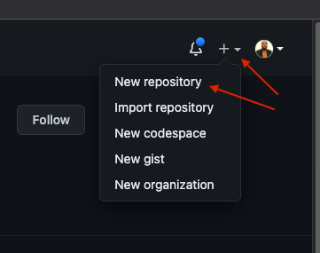
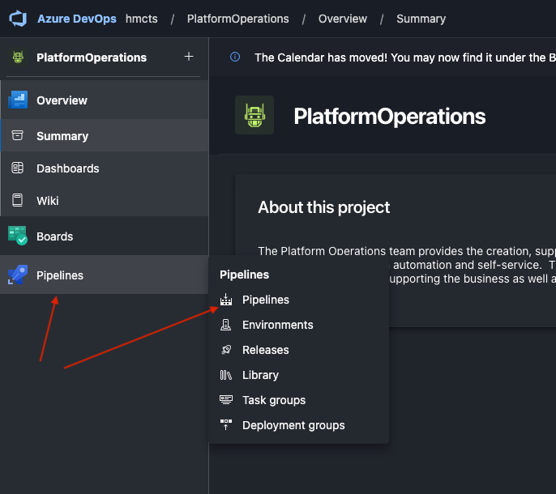
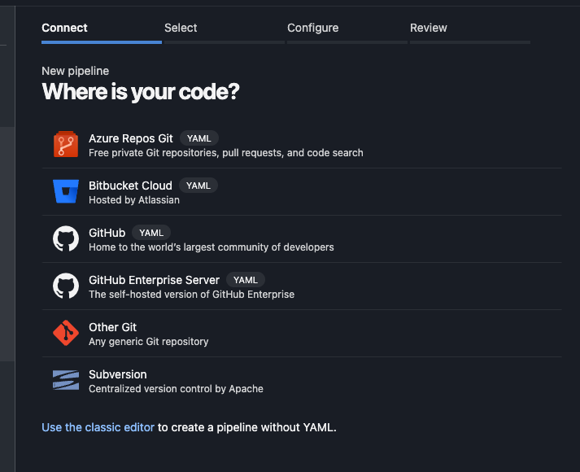

Prereq - CI/CD and SVC
If these terms are alien to you, this would be a good time to take a pause, grab your favourite beverage and have a read of the follow documentation - SVC - CI/CD
With that out of the way, the first thing we’ll need to get setup for the labs is a pipeline as all your code would need to run somewhere. While we can execute our terraform code manually, as explained in the next section and mainly in lab environments or cloud accounts, we advice that you always stick to having your code in a git repo.
This section will introduce you to out Git repo and Azure DevOps pipelines, we know you will need to visit Git and Azure pipelines like everyday so we might as well get started with that.
Lab Git Repo
Platform Operations used Git for it’s source control. To create a lab repo follow the steps below
- Navigate to the HMCTS git organisations page. If you dont already have access you can double check the Onboarding Checklist to make sure you have the right access. You can also speak to a team member to assist if needed.
Create a new git repo. Call this repo
lab-yourname-goldenpath. You can follow this convention in other sections if this exercise.Create new Git repo

Note: In a production environment you will need to update a repository’s settings to allow merging to master | main only from a branch PR and also to require at least 1 reviewer. You can
learn more about this in the Managing your repository’s settings and features documentation.
- Clone your new repo to your local machine as you will need this later.
Lab Pipeline
You will also need a devops pipeline to run your code. To create a pipeline follow the steps below
Create a pipeline in Azure Devops. In Azure DevOps, navigate to the HMCTS Platform Operations organisation. On the
Pipelinesmenu, click onPipelinesCreate new DevOps project
Specify where you code repository is, in our case this would be Git
Specify Git repository
Follow the relevant screens and prompts, select your lab repository in Git which would be an item listed after authentication is complete.
Build your resources
To get your resources provisioned, follow the steps below
- In the
lab-azure-resource foldercopy all the files into your repo root folder. Your folder should now look like this
.
├── azure-pipelines.yaml
└── components
└── lab
├── main.tf
├── provider.tf
└── variables.tf
- Commit and push to your repo. This will trigger a devops pipeline run.
What did i just create?
Alot has happened and is a good place to walk your through whats taken place
Clean Up
At the end of the exercise you are required to delete these repository and pipeline as good practice 🤗.